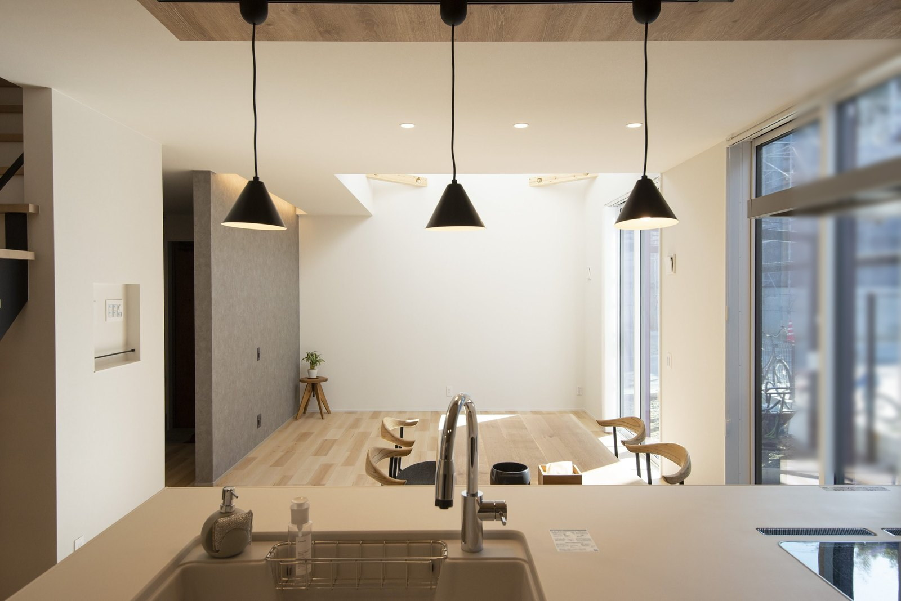

「奈良で新築、実際いくらかかるの？」
広告の価格と、最後に払う総額が違った——という話、聞いたことはありませんか？
価格を公開している工務店として、新築の総額の中身を正直にお話しします。
新築の総額は、4つでできています
新築の費用は、ひとつの数字ではありません。
次の4つを足したものが、本当の総額です。
含むかは会社で違う
広告に大きく書かれるのは、たいてい①だけ。②③④が「あとから膨らんだ」の正体です。
シバ・サンホームでは、諸費用・外構の目安まで含めてご提示します。
シバ・サンホームの新築の価格
当社の新築は注文住宅です。
いちばん人気のNESTで坪69.9万円〜（税込）。
延床30坪なら本体価格2,095万円〜（税込・内装・設備込み）が目安です。
| シリーズ | タイプ | 総額の目安（税込） |
|---|---|---|
| NEST | 2階建て・30坪 | 2,095万円〜 |
| NEST FLAT | 平屋・24坪 | 1,888万円〜 |
| ARCH | 2階建て・30坪 | 2,475万円〜 |
相場との比べ方は坪単価の記事に詳しく書きました。
月々の支払いから考えたい方は予算の決め方の記事をどうぞ。

本体価格には、キッチンなどの設備と内装まで含めてお出ししています。
建売と注文住宅、どちらの新築にする？
新築には、大きく2つの道があります。
- 建売：できあがった家を土地とセットで買う。価格が明確で、入居も早い
- 注文住宅：土地と会社を選び、間取りや仕様を決めてから建てる
どちらが正解ということはありません。
ただ、断熱や耐震などの性能を自分で選べるのは注文住宅です。
当社の新築は、耐震等級3（全棟・許容応力度計算）と断熱等級6が標準。
夏と冬の過ごしやすさは、性能のページにまとめています。
土地がなくても、始められます
奈良で新築を建てる方の多くは、土地探しからのスタートです。
気に入った土地は、申し込む前に住宅会社に見てもらってください。
当社では候補地の確認を無料で行っています。
進め方は土地探しの記事に順番どおり書きました。
2026年の住宅補助金も、使えるものは漏らさずご案内します。
よくあるご質問
奈良で新築を建てると、総額いくらかかりますか？
本体価格＋諸費用＋外構費、土地がなければ土地代です。
当社なら延床30坪で本体2,095万円〜（税込）。
総額の目安は、最初の打ち合わせでお出しします。
完成までどれくらいかかりますか？
土地が決まってから、打ち合わせ・設計・工事とおおむね1年前後が目安です。
入居したい時期から逆算して、早めに動くのがおすすめです。
他社で紹介された土地でも見てもらえますか？
構いません。
擁壁・地盤・上下水道・日当たりまで見て、建てられるか、いくらかかるかを正直にお伝えします。

奈良の工務店シバ・サンホームで、初めての家づくりに伴走しています。お金のことこそ正直に。モットーはスピード・誠実さ・楽しさ。